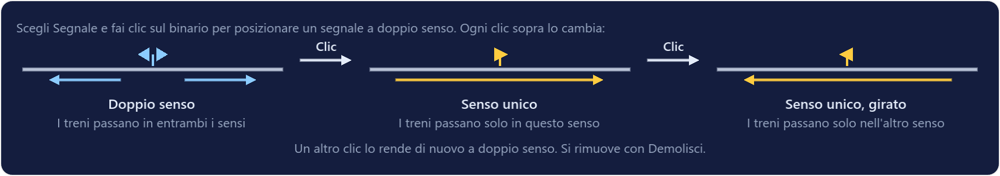

Segnali
Tenere separati i treni.
I segnali dividono una linea in blocchi perché i treni si aspettino e non si scontrino. Per cominciare non te ne serve nessuno: scambi e binari di incrocio tengono già separati i treni. I segnali permettono a più treni di condividere una linea trafficata.
Mettere i segnali
- Scegli Segnale (9) in Ferrovie e clicca su un tratto di binari. Ognuno costa 600 $.
- I segnali vanno su binari dritti o diagonali, non su curve, scambi, banchine o passaggi a livello.
- Clicca di nuovo su un segnale per renderlo a senso unico, ancora per il senso opposto e un'altra volta per il doppio senso.
- I segnali si rimuovono con Demolisci.


In che senso punta?
- Con Segnale scelto, su ogni segnale compare una freccia: con una punta a ogni estremità per un segnale a doppio senso, con una sola punta per uno a senso unico, rivolta nel senso in cui i treni possono passare.
- Il segnale sotto il mouse mostra in bianco come diventerebbe con un clic, e la nota accanto al mouse lo dice a parole.
- Senza lo strumento, guarda le luci: un segnale a doppio senso ha una luce su ogni lato del palo; uno a senso unico ne ha una, rivolta ai treni che lascia passare.
Blocchi
- I binari tra due segnali formano un blocco. Un treno supera un segnale solo quando il blocco successivo è libero; altrimenti aspetta.
- Ogni scambio è un blocco a sé, con o senza segnali. Un treno entra in uno scambio solo quando è libero, e lo è anche il binario da cui ne esce, fino al prossimo scambio o segnale.
- I treni aspettano solo ai segnali e davanti agli scambi. Altrove, i treni sullo stesso binario si scontrano: entrambi vengono distrutti, con tutto ciò che trasportano, e i rottami bloccano la linea per alcune settimane.
- Un segnale a senso unico lascia passare i treni solo nella sua direzione, e i treni pianificano il percorso tenendone conto.
Incidenti ferroviari
- Quando due treni si scontrano, entrambi vengono distrutti con tutto ciò che trasportano, e non viene rimborsato nulla. Le notizie ne parlano, e dal punto si alza fumo per qualche giorno.
- Un treno in un deposito non può essere urtato, né uno che passa sotto un ponte che un altro treno sta attraversando. Autobus e camion non si scontrano mai.
- Durante la manutenzione, i vagoni rimasti fuori dal deposito continuano a occupare il binario.
- Un incidente vicino a una città riduce la valutazione di ogni compagnia coinvolta presso il consiglio comunale. Vedi Consigli comunali.
- Per far viaggiare più di un treno su un solo binario, aggiungi binari di incrocio dove i treni si incontrano.
Poi: Binari di incrocio.